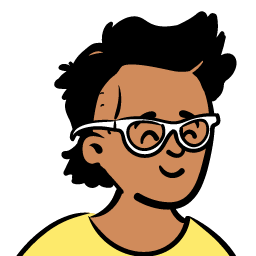
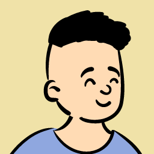
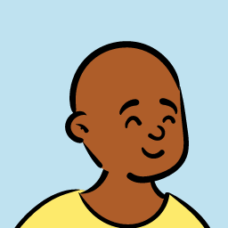
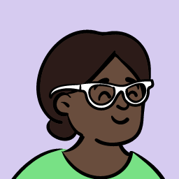
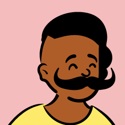
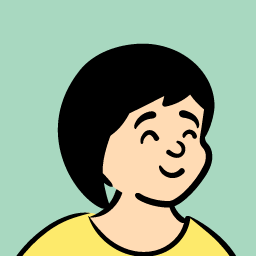
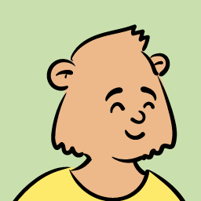

Rushabh Fulkari
Senior Flutter Developer
I build production Flutter apps. For the last year that has meant 34 dating apps at CupidMedia serving 60M+ members in 180 countries — ad monetisation built from zero, age-verification compliance across four jurisdictions, Akamai bot protection, and the Sentry migration. Five years in, across VoIP, e-commerce and manufacturing before that.
Looking for a senior Flutter role in the UK or US. CV (PDF) · rushabhfulkari@gmail.com
Selected work

Cadence→ A Flutter reference app built to be read as much as run: ten production-grade features in one codebase, each with the trade-off it makes written down beside the working code. Offline-first sync, BLE GATT, an LLM agent loop, server-driven UI, a WCAG AA audit, and one screen embedded in Kotlin and Swift hosts over Pigeon. Live demo Flutter Kotlin Swift
34 app flavours, one codebase. Built the ad monetisation platform from zero — banner, interstitial and native formats, native ad factories on both platforms, seven mediation networks, all of it remote-configurable so experiments ship without a release. Age verification on Google Play Age Signals and Apple's Declared Age Range behind a fail-open plugin for Texas, Utah, Louisiana and Brazil. Akamai Bot Manager extended from three endpoints to the whole account surface. Led the Sentry migration and cut Android ANR risk.

Highlands Brain→ Audio-video calling on the Stream SDK: call initiation, acceptance, rejection and background handling, with platform-specific call UI, custom ringtones and reconnection through network drops. Call state persists and recovers across the app lifecycle. AndroidiOS Sergo→ A form builder that renders text, checkbox, radio, dropdown, signature and file-upload fields from API configuration alone — multi-step validation with section progress, digital signatures, image attachments and PDF generation. AndroidiOSReal-time order tracking over FCM, an interactive product designer with image manipulation and frame customisation, and an admin dashboard for order and delivery management. Offline persistence on Hive with image caching and background upload.
Where I have worked
Mobile Application Developer. 34+ global dating apps, 30M+ users. Multi-flavour infrastructure with automated CI/CD; owning onboarding, security, monetisation, UI redesign, analytics and regulatory compliance.
Flutter Developer. The Brain audio-video call module — call management, background handling and quality monitoring, with state persistence on BLoC.
Flutter Developer. Interactive applications for manufacturing staff, on BLoC, with comprehensive form validation and submission workflows.
Flutter Developer. Social networking, dating and e-commerce apps, with real-time features and scalable state management.
Daily Crypto News, Outfik, Spot the Truck, PPTS India, Streetrulerz, Cryptax — cryptocurrency, fashion, logistics and automotive.
Numbers
- Registered members
- 60M+
- Monthly installs
- 1.4M+
- Countries served
- 180+
- Languages shipped
- 43
- App flavours
- 34+
- Deploy time cut
- 80%
- Release cadence
- Bi-weekly
- Test coverage
- 80%+
Stack
CoreFlutter · Dart · Clean Architecture · native platform channels StateBLoC · Cubit · Riverpod · Provider · GetIt · built_value PlatformFirebase · AdMob · AppsFlyer · Akamai BMP · CMP SDK · GDPR · ATT · i18n RealtimeVoIP · WebRTC · Stream Video · Agora · WebSockets TestingUnit · BDD widget · integration · Mockito · Mocktail · Maestro DeliveryBitrise · Fastlane · GitHub Actions · Sentry · Raygun AlsoAndroid · Xcode · Kotlin · Swift · Python · Java · C# · JavaScript
Elsewhere
GitHub · LinkedIn · Email · CV Away from a keyboard Guitar · Rapping · Cricket · B.Tech, NIT Karnataka (7.97 CGPA) · A year in the USA on the KLYES exchange, and the BUBW peace conference in Maryland.



Built by hand — no framework, no build step. The type, the palette, the prints and the faces all come from Cadence, because a portfolio that looks nothing like the work it is showing is arguing against itself. Illustrations are Open Peeps by Pablo Stanley, CC0.